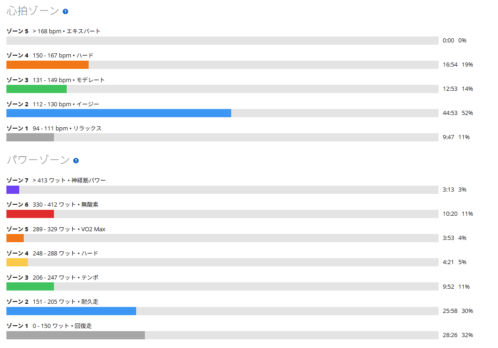
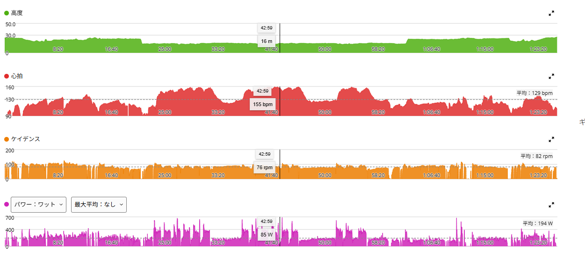

初の平地60/30。平坦でやったら、身体全体が重くなる疲れ方だった
今日は渡良瀬遊水地で60秒ON／30秒OFF。これまでは唐沢の登りでやっていたメニューだが、今回は初めて平坦で試してみた。理由は単純で、道幅が広くて平坦なぶん、ONとOFFの管理がしやすいからである。
坂だと勾配や山頂の位置に左右される。OFFに入った瞬間に下りになったり、山頂までの距離でONが伸びたりする。それはそれで実走らしいのだが、今回はもっと純粋に「60秒の出力をどう揃えるか」を練習したかった。

45.12km・NP245W・TSS113.1
- 全体45.12km / 1時間26分18秒 / 獲得64m / 運動負荷169
- 負荷平均194W / NP245W / IF0.889 / TSS113.1 / 最大687W / 20分最大265W
- 心拍・回転平均129bpm / 最大160bpm / 平均82rpm
- 環境平均27.4℃ / 最高30.0℃ / 推定発汗1,272ml
- 効果有酸素TE3.7 / 無酸素TE0.5
メニューは60秒ON／30秒OFFを6本、5分レストを挟んでもう6本。余裕があれば追加3本、という組み立てにした。ONの狙いは370〜385W、OFFは100〜150Wくらいを目安にしている。
12本連続も考えたが、今回は6本＋5分レスト＋6本にした。結論から言えば連続にしなくて正解だった。普通にきつい。獲得標高は64mしかないのに、中身はかなり濃い日になった。

1セット目は平均374W。半分から一気にきつくなった
- 1セット目のON375W → 367W → 369W → 388W → 374W → 372W
- 平均・振れ幅約374W / 最小367W〜最大388Wで21W
数字だけ見れば、狙っていた370〜385Wにかなり近い。振れ幅も21Wに収まっている。ただ、体感は途中から一気に変わった。1セット目の半分くらいで「これ、思ったよりきついな」となった。
最初の数本はまだ余裕がある。でも4本目あたりから急に負荷が積み上がってくる。30秒休んでも完全には戻らない。そこでまた60秒。その繰り返しが効いてくる。

5分レストのあと、2セット目は350W台が増えた
- 2セット目のON384W → 354W → 373W → 352W → 361W → 362W
- 平均・振れ幅約364W / 最小352W〜最大384Wで32W
セット間レストは5分。正直、走っている最中は「5分はちょっと長いかな」と思った。呼吸もかなり戻るし、気持ちも落ち着く。でも、2セット目に入った瞬間にその考えは消えた。序盤からずっときつい。呼吸は戻っても、高強度を繰り返した疲労までは消えていなかったということになる。今の自分には5分でちょうどいいのだと思う。
結果としては1セット目より明確に落ちて、特に350W台が増えた。振れ幅も21Wから32Wへ広がっている。今日は375〜385Wを維持するのが難しかった。ただ、これは失敗というより次の課題がかなり分かりやすくなった日だったと思う。375〜385Wを出すことはできる。でも、それを複数本ずっと揃えるのはまだ難しい。
追加3本と、カーブでOFFを延ばした話
- 追加3本385W → 363W → 353W
2セット終わったあと、約6分流してから追加で3本。最後まで高い出力へ戻すことはできた。ただ、もう十分だった。これ以上本数を増やすより、今は本数そのものではなく「出力を安定させる」ことを優先した方がよさそうだ。
ちなみに、この追加セット中に1本だけOFFが約59秒になっている。これは失速ではなく、コース上の90度カーブに入ったので安全優先でOFFを延ばしたためである。平坦で管理しやすいとはいえ、外を走っている以上は完全なローラーのようにはいかない。高負荷メニュー中でも、こういうところは無理をしない。それも実走の一部だと思う。
400Wまで跳ねてから落ちる。次の課題は「入り方」
今日はONに入る時、最初に一気に400W近くまで上がって、そこから370W前後まで落ち着くというパターンが多かった。ここは今後改善したい。60秒しかないので、最初の数秒で必要以上に踏むと、その分だけ後半が苦しくなる。
だから次回のテーマは「最低365Wを絶対守る」ではなく「1セット目を安定させる」にする。多少350W前後になってもいい。まずは最初に400Wまで跳ねない。350〜360Wくらいで入って、そこから必要なら少し上げる。最後までブレを小さくする。それができるようになってから、少しずつ全体を上げていく。
最終的には375〜385Wをきれいに揃えたい。でもその前に「狙った出力へ入る技術」を覚える。今はその段階だと思う。
平坦は坂と全然違う。そして身体全体が重い
今日はずっと平坦だった。いつも高負荷は坂でやることが多いので、乗っている感覚がかなり違う。坂なら重力があるぶん、ペダルへトルクをかけやすい。ある意味、踏めば自然に負荷がかかる。でも平坦は速度が乗るし慣性もある。そこでさらに高いパワーを維持しようとすると、ギアとケイデンスを自分で合わせ続ける必要がある。これが思ったより難しかった。
そして終わったあとの疲労感が少し変だった。脚の前側が終わった、心肺が限界、腰が重い。そういう分かりやすい疲れではない。ただ「身体全体が重い」という感じで、どこが疲れているのか自分でもよく分からない。平坦で高いパワーを何度も立ち上げて、30秒だけ抜いて、また踏む。それを繰り返したからなのかもしれない。いつもと違う疲れ方で、これはこれで面白かった。
坂で60/30を安全に何本も繰り返せる場所はなかなかない。その点、渡良瀬は道幅も広くて平坦で、ONとOFFの管理もしやすい。朝なら全然人もいないので、しばらく60/30はここで続けていこうと思う。
今日やってみて思ったこと
渡良瀬の平坦60/30は、坂とは全然違った。1セット目はかなり揃った。でも半分から一気にきつくなった。5分レストは長く感じたのに、2セット目に入ったら最初からきつかった。375〜385Wを維持するのは難しかった。
事前には「行けそうなら12本連続でもいいのでは」とも考えていたが、やらなくて正解だった。1セット目の半分ですでにきつく、5分休んでも2セット目は最初からきつい。これを12本連続でやっていたら、後半は出力を揃える練習ではなく「とにかく耐える」だけになっていた可能性が高い。今は6本を揃える、5分休む、もう6本を揃える。この方がいい。
そして終わったあとは、脚だけではなく身体全体が重い。普段と違う疲れ方だった。でもかなり面白い。しばらくは渡良瀬の平坦で続けてみる。出力を出す、ではなく出力を揃える。次の課題はそこになった。
次に見るポイント
- 入り方開始直後の400Wオーバーを減らせるか。350〜365Wでスッと入れるか
- 振れ幅1セット目の21W、2セット目の32Wをどこまで縮められるか
- ON後半60秒の後半でパワーを落としすぎないか
- 2セット目5分レスト後にどこまで戻るか。350W台後半を維持できるか
- 平坦の技術ギアとケイデンスの合わせ方。身体全体が重くなる疲労が今後どう変化するか